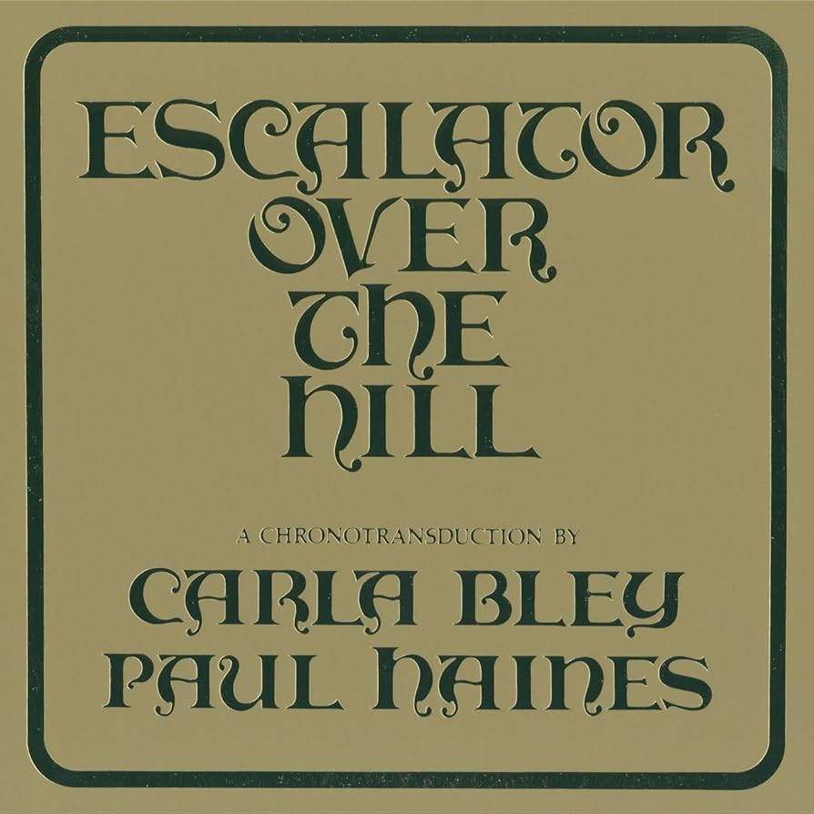
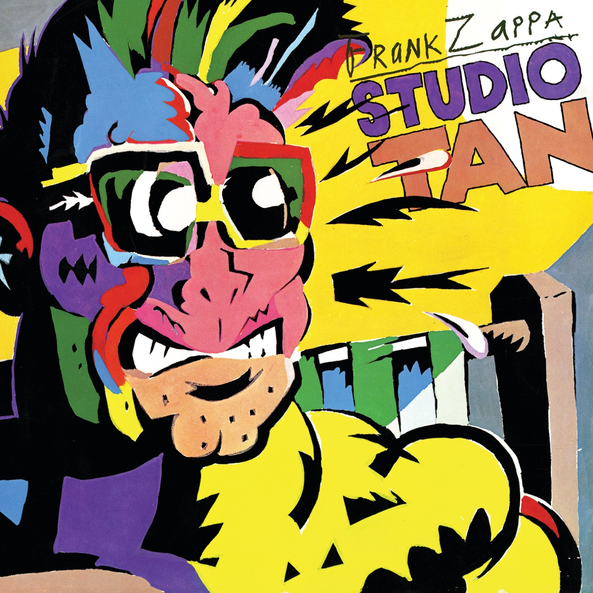
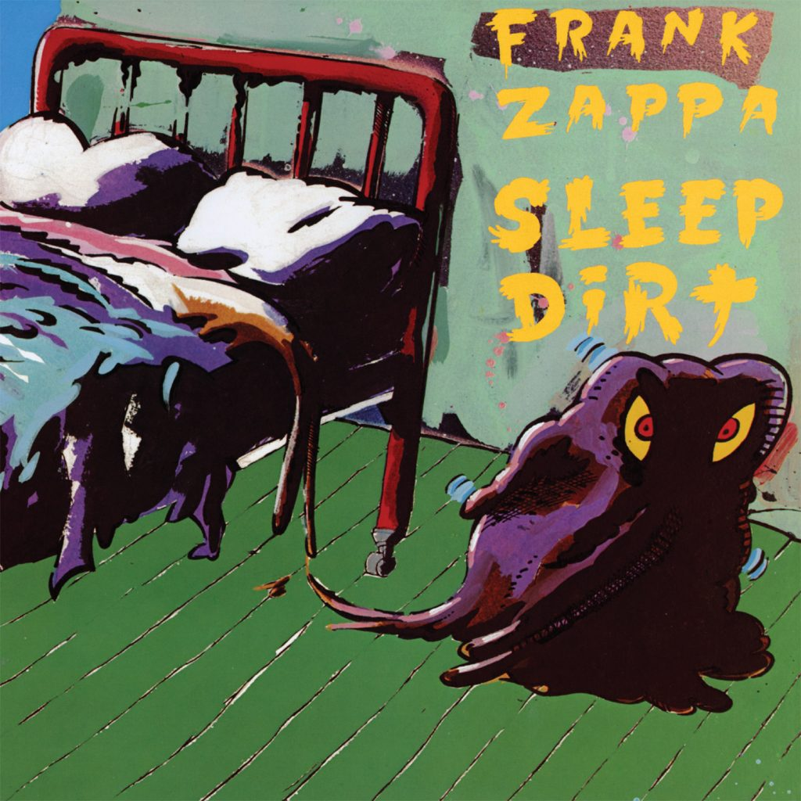
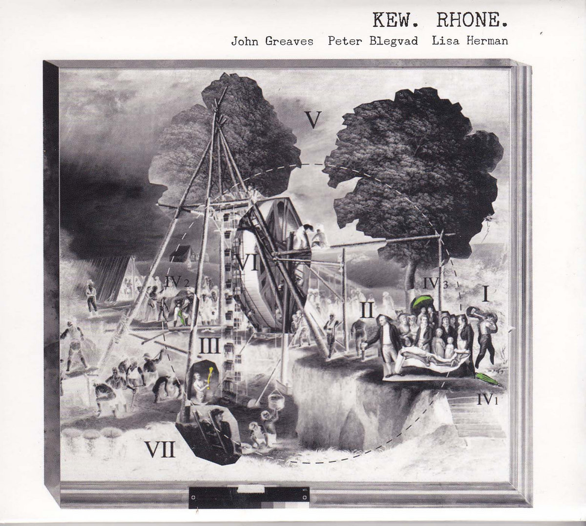

My Tastes and Recommendations
This is MY website and I get to choose its content. So here is a little section about my artistic interests, and recommendations for the interested visitor. I will add to this when I feel inclined to do so. Consider it a blog or something.
Music
Given a public space that is uniquely my own, I cannot restrain myself from devoting at least a part of it to my appreciation of music. I relate almost all of my life's experiences to the music I was listening to, or creating, at the time. Rather than tie myself up in cliche'd purple prose, let's just leave it at: It Is Very Important To Me.
So here I will describe a handful of the albums that act as the tentpegs holding down the nebulous and abstract mess that is my personality. Whether the musical and thematic philosophies therein have been sufficiently appealing for me to adopt, or they just go hard, they are very dear to me, and I would love to talk about them.
Carla Bley and Paul Haines - Escalator Over the Hill

Composed and recorded between 1967 and 1971 by jazz composer Carla Bley with words by Paul Haines, this is not a jazz opera but, as its subtitle suggests, a 'chronotransduction'. There's nothing else that sounds like it really, with its mixtures of big band, free jazz, choral sections, avant-garde rock, tape experiments, spoken word and composed/improvised soundscapes blending to make something truly unique and genre-defying, so chronotransduction it is.
This thing is a monster. One of my favourite albums to bring up as an example of media that tries to make sense of the concept of INFINITY. And incidentally an album that I can rest assured no-one I've recommended it to would EVER give it a chance. I myself tried and failed for years.
Escalator Over The Hill begins with a 13-minute 'overture' that rushes through the various themes and leitmotifs, and climaxes with some ear-splitting free jazz saxophone wailing - there is an exact moment in the track at which your average listener will probably voice aloud 'oh fuck this' and abandon the album.
I have a recommendation for those who want to check this thing out, skip the first track, and begin your listening experience with the second track, 'This is Here'. From this point on, the album's 'narrative' is in full swing, essentially the story the album is attempting to tell begins here. Once the whole album has been listened to, the overture will make sense and can be incorporated into successive listens.
And what exactly is the album's narrative? Well, that's for you to decide, but in my reading of it the album is about Everything/Infinity. The album starts with the sounds of its ending playing in reverse, oh and the album does not end. On the original LP record release, on the final track - 'And It's Again' - Jack Bruce intones the track's title phrase with mounting intensity until he gives way to a solemn choir singing a descending set of notes. As they resolve on the final note, the record player's needle slides into the LP's lock groove, drawing the last note of the album out forever, or until you take the needle off. More than just a gimmick, this choice to let the album functionally play out beyond the limits of what needs to be composed to fill it out reinforces its intrinsic themes of infinity, infinite recursion of events, infinite people, infinite space. And it's again, and again, and again.
Aside from the loftier aspects of the album's perceived thematic structure, when you get to know it, it's a genuine delight to listen to. You've got moments of pure shred-tastic rock excess like on 'Businessmen', some genuinely frightening avant-garde work on 'This Is Here' and particularly 'Stay Awake', and out of absolutely nowhere comes heartrending balladry on tracks such as 'Why' (featuring fucking Linda Ronstadt??) and 'Holiday in Risk'. The album has a quality often associated with inaccessibility - once you've opened your brain to it and no longer find its most difficult aspects offputting, yet another listen to the thing the whole way through becomes more and more appealing. You can experience the whole pantheon of human emotions across its 103 minute runtime, ideal for bus journeys when you're feeling introspective.
I think this is one of the most impressive and important albums ever written, and its place in history is vital given it was masterminded by a woman at the peak of her creative powers in a vastly male-dominated space. It's very important to me, and although suggesting uses of anyone else's time can be a bit presumptuous, if what I've said makes this sound interesting to you, please do check it out. And skip the first track for your first time listening to it. Check out this reprint of the description of the album's conception and recording penned by Bley herself, it makes for fascinating reading.
Frank Zappa - Studio Tan and Sleep Dirt


Frank Zappa released 62 albums' worth of material during his life, across which he honed a very characterful compositional style. Extensive listens to his discography (sometimes listening past the scatological and crass lyrical choices on some of his less restrained songwriting efforts) will reveal a pattern of compositional choices that define the Zappa sound. I will not discuss the finer details through a pure music theory lens here but would direct the interested and musically-inclined reader towards some fantastic video essays on the subject by Tyler Bartram and Chanan Hanspal. My own summary would be that his approaches to melody and rhythm are probably the biggest signposts for whether you are listening to a Zappa composition - his distinct use of strange intervallic leaps in his melodies and often structuring his rhythms around nested tuplets or rapid time signature changes, giving his rhythms an almost speech-like quality.
My personal favourites of his albums are Studio Tan and Sleep Dirt, both released as a result of trying to piece together a set of cohesive albums out of a monstrous repository of songs and compositions written and recorded mostly between 1972 and 1976. To me both albums exist as two sides of the same coin, with similar composing goals but different methods of execution; Studio Tan erupts in your ears like a set of controlled detonations, while Sleep Dirt is more prone to setting up moods and lingering on them.
Studio Tan's entire first side is taken up by the sprawling Greggery Peccary, a kind of children's story for adults about an anthropomorphic peccary inventing THE CALENDAR and all hell breaking loose when 'rapidly aging, very hip young people' take issue with the consequences of being able to tell how old they are. The suite at times sounds like a bit of a pisstake of the works of the Great American Composers, with sections that sound almost like cartoon scores from Tom and Jerry in among the more experimental aspects. A personal favourite section is the one that directly follows the description of piles of transistor radios tuned to different stations, where the various melodic themes are restated across a fast-paced jet-propelled jazz-fusion-meets-contemporary-art-music breakdown, leading into a section critiqueing the pedalling of new-age philosophy for profit ('how many is God, say is God quite a few?') set to a wonderful set of modulations. It takes quite a few listens to appreciate the madness of the piece, as well as some of its challenging dissonance, but it's an addictive little number once you come to like it.
Studio Tan's second side features some of Zappa's absolute best work. 'Revised Music for Guitar and Low-Budget Orchestra' features as its centrepiece one of his famous 'xenochrony' guitar solos, in which a recorded guitar solo from a previous performance is notated, and scored for other instruments. Hence in this piece's middle section we hear brass instruments following along and harmonising with this wonderfully idiosyncratic guitar line. Eitherside of this section, there are some challenging, chordally-dense moments of friction between shifting sets of orchestral instruments against the winding guitar lines in which the themes of the piece are stated in various increasingly chaotic permutations. The whole thing swirls between beautiful and ugly textures in such a satisfying manner. The album reaches its saturation point with 'RDNZL', a sequence of fantastic long-form melodies over a shifting miasma of drums, bass and keys. A carpal tunnel-inducing guitar solo gives way to an ecstatic set of vibraphone and synth notes, and the track plays itself out with some grooving piano thrashings, and a final dissonant squirt before the whole thing resolves itself with a hilariously and unexpectedly cliche-d two-note flourish.
Sleep Dirt is a more brooding affair from the get-go. Opener 'Filthy Habits' traps the listener in this wonderfully sludgy and brooding ostinato while Zappa's guitar snakes around the stereo field. The album then gently leads the listener through the pretend trad-jazz of 'Flambay' and the addictively hook-y and unpredictable fuzz-toned melodies of 'Spider of Destiny' towards the album's absolute apex, 'Regyptian Strut'. This track arrives with a kind of self-aware pomposity, huge drums and brass fanfares conjuring up images of imposing stone buildings and marching boots, before peeling back to show its intricate layers. The tightly composed harmony of the piece is able to be stated cohesively with just trombone and bass, the full harmonic complexity implied and readable just from the interaction of these two instruments. As the track continues, the restated themes are coloured more fully with the addition of more instruments, and we see a wonderful example of Zappa introducing a bass ostinato whose meaning is altered throughout with the shifting of chords above by the brass and keys. The piece's pomp and flair feels totally earned, an absolute triumphant musical moment.
The album's second side presents a charming couple of curiosities. 'Time is Money' returns to more of the blistering hail-of-musical-ideas approach favoured on Studio Tan, with rhythmic machinations galore and the title track is a little oasis of calm, an improvised acoustic guitar duet between Zappa and some fella called James 'Bird Legs' Youman, and the album ends with the blistering, sprawling and wonderful 'The Ocean is the Ultimate Solution'. This final track showcases the driving momentum of Patrick O'Hearn's upright and electric bass playing, and throughout Zappa is chugging away on a 12-string guitar in a completely bizarre tuning that gives it a glassy, delicate quality. The final 7 minutes or so of the album are a relentless powerful thrust towards the finish line, with Zappa overdubbing a fuzzed-out yet clean and melodic guitar solo powered by Terry Bozzio's kick-heavy drums.
Both of these albums to me represent the absolute apex of Zappa's creative output, and handily circumvent the lyrical excesses Zappa is probably more known for. Hence it is certainly harder to offhandedly dismiss the value of the music because of something superficial. However it is admittedly a bit of a hard sell to get a new listener into this stuff by presenting them with 'Greggery Peccary'. I therefore recommend the interested reader to either begin with Sleep Dirt, or flip the proverbial record on Studio Tan and begin with the second side, starting from 'Lemme Take You To The Beach'.
John Greaves, Peter Blegvad, Lisa Herman - Kew.Rhone
